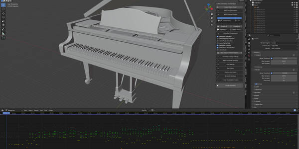
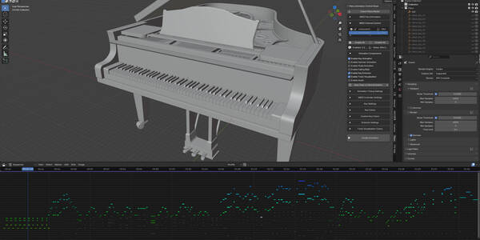
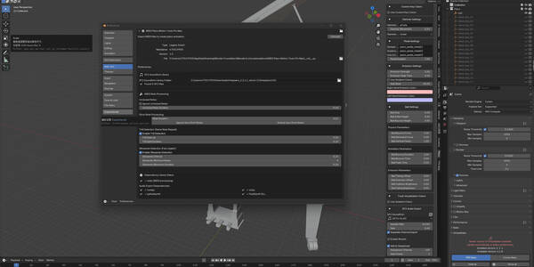
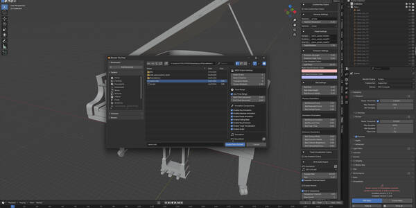
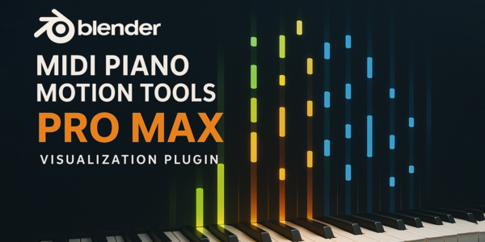
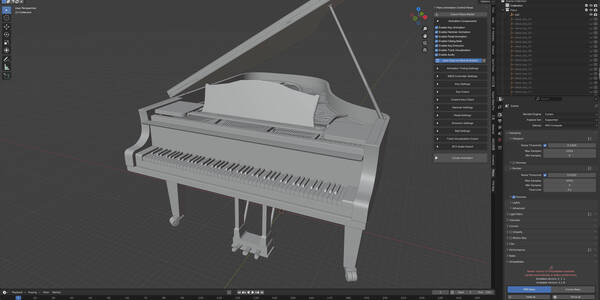
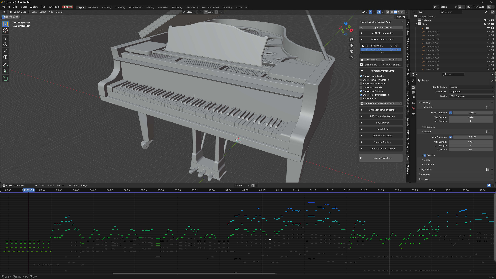
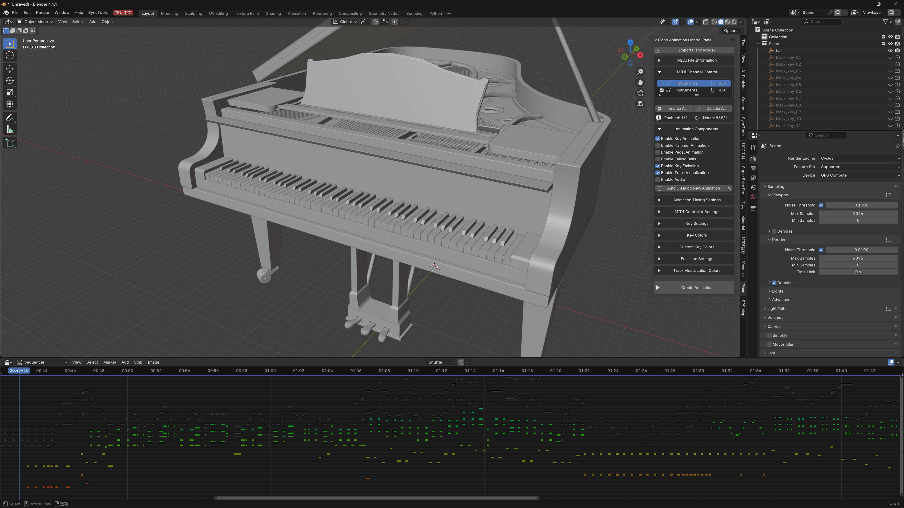
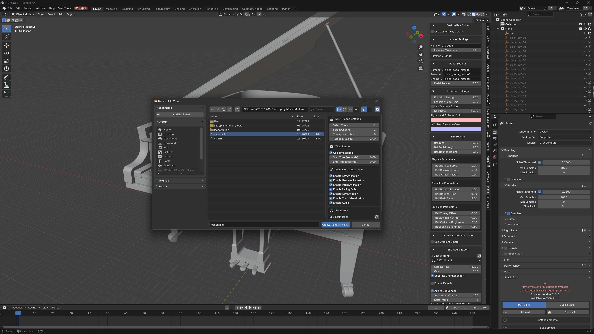

MIDI 钢琴动力工具 Pro Max – 将音乐转化为视觉魔法
用 MIDI 钢琴动作工具 Pro Max 让你的音乐活跃起来。这个终极 Blender 插件将 MIDI 文件转换为 令人惊艳的专业钢琴动画 。
无论是用于音乐视频、教程、视觉艺术还是现场表演，这个工具都能让每个人都能轻松创建专业级动画。
注意：视频演示使用了其他语言，但实际插件语言为英文
自动钢琴按键动画，具有逼真的节奏
与音乐音符同步的锤击动画
踏板动画（延音、柔和、保持）
支持全部 88 键范围（MIDI 21–108）。


具有可自定义颜色的动态按键触发效果
基于速度和彩虹渐变的颜色模式
每个通道和每个按钮的可自定义颜色。
球体下降可视化
完整的16 通道 MIDI 颜色管理
内置 SF2 音色库 用于音频生成
按 MIDI 通道导出音频
支持自定义音色库
高质量 流体Synth 渲染
多种插值模式（线性、常数、贝塞尔曲线、智能）。
速度敏感型动画时长
支持 MIDI 控制器（音高弯曲、调制）。
帧精度定时
批量动画清理和管理

直观的边栏用户界面（View3D → 边栏 → 钢琴）
实时通道启用/禁用
每个通道的音频和动画静音
视觉序列编辑器集成
自动组织的动画数据
自定义按键命名规则
可编辑的时间、持续时间和发射强度
智能插值实现自然运动
完整的MIDI 信息显示和诊断
音乐视频创作者
音乐教育工作者和学生
视觉艺术家和设计师
动画工作室
表演音乐家
任何想要美丽的 MIDI 可视化的人
导入内置钢琴模型（或使用你自己的钢琴模型）。
通过钢琴面板加载你的 MIDI 文件
配置按钮、锤子、动画、效果和颜色。
一键动画生成
根据需要调整通道和设置
使用 SF2 音色库导出音频
渲染你最后的钢琴表演动画
兼容 Blender 4.2.0 及更高版本。
包括捆绑的库：mido、numpy、scipy、fluidsynth
附带默认 SF2 音色库。
支持自定义音色库
高效的 F 曲线组织
基于节点的启动材质
完全 支持 16 通道 MIDI
高质量钢琴模型
默认 SF2 音色库
流体Synth 二进制文件
所需的 Python 库
将你的 MIDI 文件转换为令人惊艳、富有表现力的钢琴表演，让观众为之倾倒。
立即获取 MIDI 钢琴动作工具 Pro Max！
MIDI 钢琴动作工具 Pro Max - 音乐转化为视觉魔法
用 MIDI 钢琴动作工具 Pro Max 让你的音乐活跃起来，这是从 MIDI 文件创建令人惊艳的钢琴动画的终极 Blender 插件。无论你是在创建音乐视频、教育内容还是艺术可视化，这个强大的工具都能让专业钢琴动画对每个人都易于使用。
主要功能：
🎹 完整的钢琴动画系统
- 具有逼真时序的自动钢琴按键动画
- 与音符同步的锤击动画
- 踏板动画（延音、柔和、保持）
- 支持 88 键钢琴范围（MIDI 音符 21-108）
🎨 高级视觉效果
- 具有可自定义颜色的动态按键发射效果
- 彩虹渐变和速度基础颜色方案
- 按通道和按键的颜色自定义
- 用于音乐可视化的球体下降效果
- 多通道颜色管理（16 个 MIDI 通道）
🎵 音频集成
- 用于音频生成的内置 SF2 音色库支持
- 按 MIDI 通道分割音频导出
- 自定义音色库管理
- 用于高质量音频渲染的 流体Synth 集成
⚡ 专业动画控制
- 多种插值模式（线性、常数、贝塞尔曲线、智能）
- 速度敏感动画时长
- MIDI 控制器支持（音高弯曲、调制）
- 帧精确定时同步
- 批量动画清理和管理
🎛️ 灵活的工作流
- 直观的边栏面板界面（View3D > 边栏 > 钢琴）
- 实时 MIDI 通道启用/禁用控制
- 音频和动画的按通道静音/取消静音
- 视觉序列编辑器集成
- 自动动画数据组织
🔧 高级自定义
- 自定义按键命名约定支持
- 可调整的动画时序和时长
- 可配置的发射强度和褪色
- 用于自然运动的智能插值
- 全面的MIDI 信息显示
完美用于：
✓ 音乐视频制作者和内容创作者
✓ 创建视觉学习材料的音乐教育工作者
✓ 探索音乐可视化的艺术家
✓ 需要钢琴场景的动画工作室
✓ 展示其表演的音乐家
✓ 任何想要漂亮地可视化 MIDI 音乐的人
工作流：
1. 导入或附加包含的钢琴模型（或使用你自己的自定义钢琴）
2. 通过钢琴面板加载你的 MIDI 文件
3. 配置动画选项（按键、锤子、效果、颜色）
4. 一键生成动画
5. 使用内置通道控制进行微调
6. 如果需要，使用 SF2 音色库导出音频
7. 渲染你美丽的钢琴动画
技术亮点：
- 支持 Blender 4.2.0 及更高版本
- 包括捆绑的库（mido、numpy、scipy、fluidsynth）
- 附带默认 SF2 音色库
- 自定义音色库支持
- 高效的 F 曲线管理和组织
- 基于材料节点的发射系统
- 完整的16 通道 MIDI 支持
包含的资产：
- 高质量钢琴 3D 模型 (piano5.blend)
- 默认 SF2 音色库（植物大战僵尸任天堂 DS）
- 用于音频渲染的 流体Synth 二进制文件
- 所有所需的 Python 库
立即获取 MIDI 钢琴动作工具 Pro Max，将你的 MIDI 文件转换为令人惊艳的动画表演，迷住你的观众！